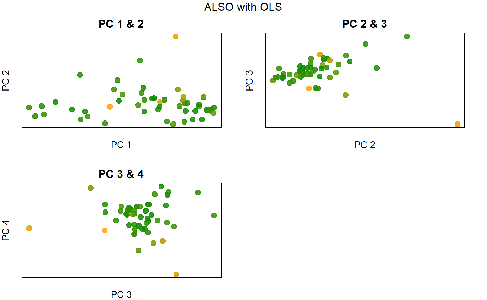
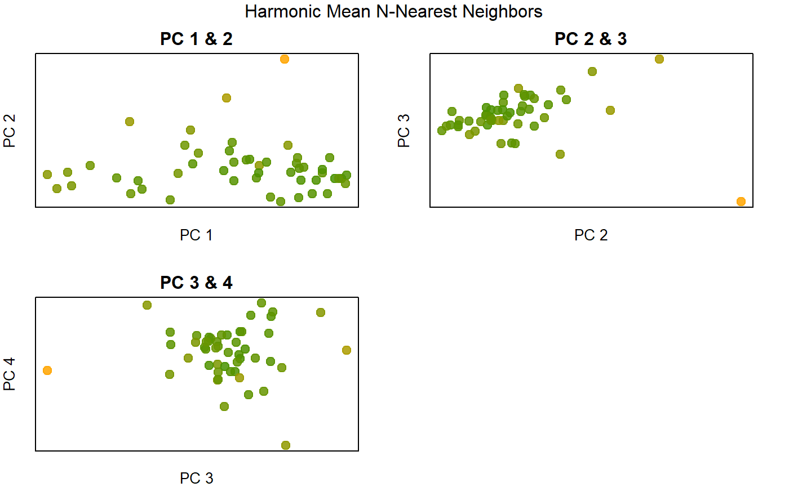
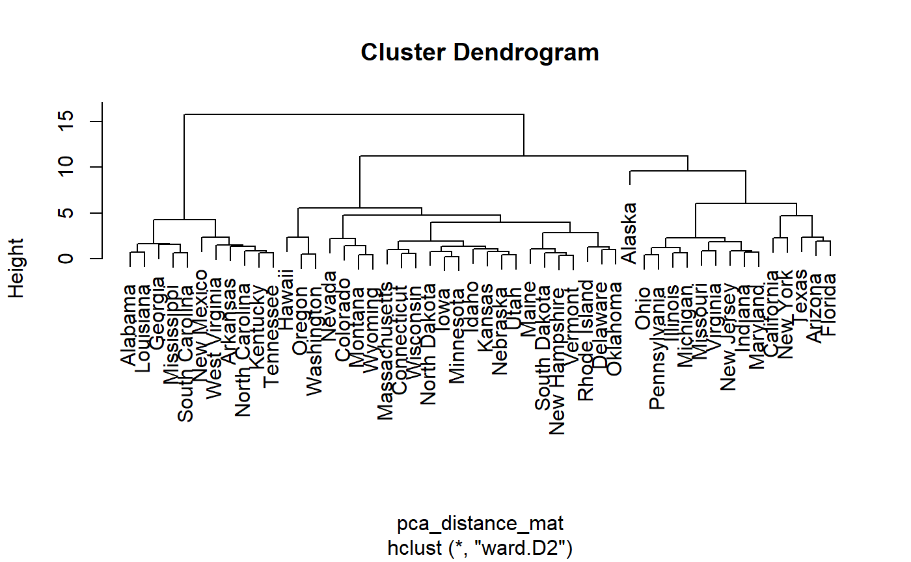
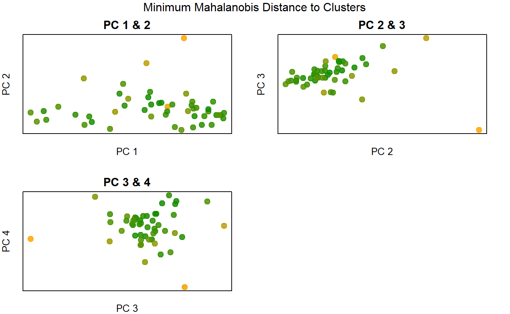
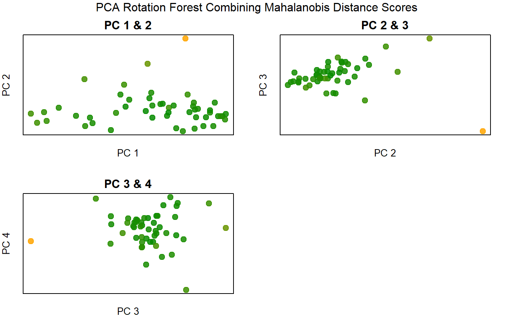

Overview
outsiders is an unsupervised outlier detection package for use with standard multidimensional data. The state.x77 data matrix containing 9 demographic characteristics of US states was used often for algorithm development and evaluation. Making use of the same data set, this vignette will provide code and visual analysis demonstrating methods available in the package.
Document Preparation
# document dependencies
library(outsiders) # devtools::install_github("dannymorris/outsiders") to install
library(dplyr) # data manipualation (CRAN)
library(tidyr) # structural formatting and data standardization (CRAN)
library(ggplot2) # static data visualization (CRAN)
library(knitr) # document printing (eg tables) (CRAN)
library(kableExtra) # "kable" (table) formatting (CRAN)
library(QuickR) # another personal package with utility functionsDemographic Data on US States
state.x77 %>%
head() %>%
kable()| Population | Income | Illiteracy | Life Exp | Murder | HS Grad | Frost | Area | |
|---|---|---|---|---|---|---|---|---|
| Alabama | 3615 | 3624 | 2.1 | 69.05 | 15.1 | 41.3 | 20 | 50708 |
| Alaska | 365 | 6315 | 1.5 | 69.31 | 11.3 | 66.7 | 152 | 566432 |
| Arizona | 2212 | 4530 | 1.8 | 70.55 | 7.8 | 58.1 | 15 | 113417 |
| Arkansas | 2110 | 3378 | 1.9 | 70.66 | 10.1 | 39.9 | 65 | 51945 |
| California | 21198 | 5114 | 1.1 | 71.71 | 10.3 | 62.6 | 20 | 156361 |
| Colorado | 2541 | 4884 | 0.7 | 72.06 | 6.8 | 63.9 | 166 | 103766 |
Variable Scaling
The standard variable scaling convention is to subtract the variable mean from each observation and divide by standard deviation. Doing so eliminates the undesirable influence of variables measured on larger and wider scales, such as Population (in thousands) compared to HS Grad (percent between 0 and 100).
\[X scaled = (X - mean(X)) / sd(X)) \]
data_scaled <- scale(state.x77)Exploratory Univariate Analysis
par(mfrow = c(3, 3),
mar = c(2,2,2,2))
for (i in 1:ncol(state.x77)) {
plot(density(state.x77[, i]), xlab = "", main = colnames(state.x77)[i])
points(x = state.x77[, i], y = rep(0, 50),
col = QuickR::add_alpha("red", 0.5), pch = 21)
}
The density plot matrix shows an interesting combination of skewed, normal, and multi-modal distributions. Outliers are evident in univariate visual analysis and are likely evident in the multivariate sense.
Multivariate Visualization of Principal Components
principal_components <- princomp(data_scaled)
summary(principal_components, loadings = T)## Importance of components:
## Comp.1 Comp.2 Comp.3 Comp.4 Comp.5
## Standard deviation 1.8780090 1.2646268 1.0438881 0.83267888 0.61396161
## Proportion of Variance 0.4498619 0.2039899 0.1389926 0.08843803 0.04808021
## Cumulative Proportion 0.4498619 0.6538519 0.7928445 0.88128252 0.92936273
## Comp.6 Comp.7 Comp.8
## Standard deviation 0.54891933 0.3762443 0.33305246
## Proportion of Variance 0.03843271 0.0180561 0.01414846
## Cumulative Proportion 0.96779544 0.9858515 1.00000000
##
## Loadings:
## Comp.1 Comp.2 Comp.3 Comp.4 Comp.5 Comp.6 Comp.7 Comp.8
## Population -0.126 0.411 0.656 0.409 -0.406 0.219
## Income 0.299 0.519 0.100 0.638 0.462
## Illiteracy -0.468 -0.353 0.387 -0.620 0.339
## Life Exp 0.412 0.360 -0.443 -0.327 0.219 -0.256 -0.527
## Murder -0.444 0.307 -0.108 0.166 0.128 -0.325 -0.295 -0.678
## HS Grad 0.425 0.299 -0.232 -0.645 -0.393 0.307
## Frost 0.357 -0.154 -0.387 0.619 -0.217 0.213 -0.472
## Area 0.588 -0.510 -0.201 -0.499 0.148 0.286pca_scores <- principal_components$scores[, 1:4]
pairs(pca_scores, main = "Principal Components 1-4 Explaining \n88% of Total Variation")
Visual analysis of the first four principal components reveals the presence of multivariate outliers along with insights into the spatial arrangement of the data points.
Assessment of Multivariate Normality
chisq_distances <- outsiders::chisq_mvn(data_scaled)
plot(chisq ~ distances, data = chisq_distances,
main = "Multivariate Ordered Chi-Squared Distances")
abline(lm(chisq ~ distances, data = chisq_distances), lty = 2)
The data appears largely non-normal in the multivariate sense.
Outlier Detection
Attribute-Wise Learning
The also() function implements Attribute-Wise Learning for Scoring Outliers (ALSO), which combines supervised and unsupervised learning to score outliers using dependent variable modeling of all features. For each variable in the original data set, a supervised model (classification or regression) is fit using the remaining variables as predictors. Outlier scores reflect the distance of the predicted value for a given observation to its actual value. Outlier scores are then summed to provide a single score suitable for extreme-value analysis.
Random Forest
also_rand_forest <- outsiders::also(data = data_scaled,
method = randomForest::randomForest,
cross_validate = FALSE,
scores_only = TRUE)## Warning: package 'bindrcpp' was built under R version 3.4.4We will use this custom function to automate and standardize visualizations of outlier scores again the first four principal components.
plot_score <- function(score, global_title, low = "green4", high = "orange",
cex = 1.3, cols = QuickR::add_alpha(mapping, 0.85), ...) {
# numeric color scale
colors <- colorRamp(c(low, high))
mapping <- rgb(colors(score / max(score)), maxColorValue = 255)
# construct base plots
build_plot <- function(data, title, xlab, ylab, ...) {
plot(data, pch = 19, col = cols,
cex = cex, xlab = xlab, ylab = ylab, xaxt = "n", yaxt = "n",
...)
title(main = title, line = 0.5)
}
# set plotting region
par(mfrow = c(2,2),
mar = c(2,2,3,2),
mgp = c(1,0,0))
# build 3 base plots
build_plot(pca_scores[, 1:2], title = "PC 1 & 2", xlab = "PC 1", ylab = "PC 2")
build_plot(pca_scores[, 2:3], title = "PC 2 & 3", xlab = "PC 2", ylab = "PC 3")
build_plot(pca_scores[, 3:4], title = "PC 3 & 4", xlab = "PC 3", ylab = "PC 4")
# add global title
par(mfrow = c(1,1))
mtext(text = global_title, line = 2)
}plot_score(also_rand_forest, global_title = "ALSO with Random Forest")
Ordinary Least Squares
also_lm <- outsiders::also(data = data_scaled,
method = lm,
cross_validate = TRUE,
n_folds = 10,
scores_only = TRUE)
plot_score(also_lm, global_title = "ALSO with OLS")
Proximity-based Scoring
This section will show two variations of k-nearest neighbors based on standard Euclidean distances: average k-nearest neighbors and harmonic mean of N-nearest neighbors. Both technques use the aggregate_knn() function to aggregate distances over a selection of k-nearest neighbors.
average_5nn <- outsiders::aggregate_knn(data_scaled, fun = mean, k = 5)## Warning in outsiders::aggregate_knn(data_scaled, fun = mean, k = 5): Data
## not a distance matrix. Euclidean distance matrix computed by default.harmonic_5nn <- outsiders::aggregate_knn(data_scaled, fun = QuickR::harmonic_mean,
nrow(data_scaled))## Warning in outsiders::aggregate_knn(data_scaled, fun =
## QuickR::harmonic_mean, : Data not a distance matrix. Euclidean distance
## matrix computed by default.plot_score(average_5nn, global_title = "Average 5-Nearest Neighbors")
plot_score(harmonic_5nn, global_title = "Harmonic Mean N-Nearest Neighbors")
Compared to the average Euclidean 5-nearest neightbors outlier score the harmonic mean variation detects more noise.
Cluster-Based Scoring
The dist_to_centers() function can be used to find the multivariate distances of data points to centroids (e.g. mean). In this application, we’ll generate cluster mean vectors from Ward’s hierarchical clustering and calculate the minimum Mahalanobis distance of each data point to each cluster mean vector. The minimum Mahalanobis distance serves as the outlier score.
# Ward's hierarchical clustering
pca_distance_mat <- dist(pca_scores)
pca_hcl <- hclust(pca_distance_mat, 'ward.D2')
plot(pca_hcl)
# 3-cluster solution
hcl3 <- cutree(pca_hcl, 3)
# cluster mean vectors
centers <- pca_scores %>%
as_tibble() %>%
mutate(clus = hcl3) %>%
group_by(clus) %>%
summarise_all(mean)
# minimum Mahalanobis distance of observations to cluster means
min_d2c <- outsiders::dist_to_centers(pca_scores, labels = hcl3,
centers = centers[, -1]) %>%
apply(., 1, min)
plot_score(min_d2c, global_title = "Minimum Mahalanobis Distance to Clusters")
PCA Rotation Forest
PCA rotation forest is an unsupervised ensemble technique that transforms subsamples of the oringinal data into new variables via principal components. All principal components are retained in each iteration, and the outlier scores from each iteration are summed to produce a final outlier score. The function pca_bag() is used to generate scores.
pca_forest <- outsiders::pca_bag(data = data_scaled,
outlier_fun = function(x) mahalanobis(x, colMeans(x), cov(x)))## Warning in outsiders::pca_bag(data = data_scaled, outlier_fun = function(x)
## mahalanobis(x, : n_iterations not specified. Defaults to 50plot_score(pca_forest,
global_title = "PCA Rotation Forest Combining Mahalanobis Distance Scores")